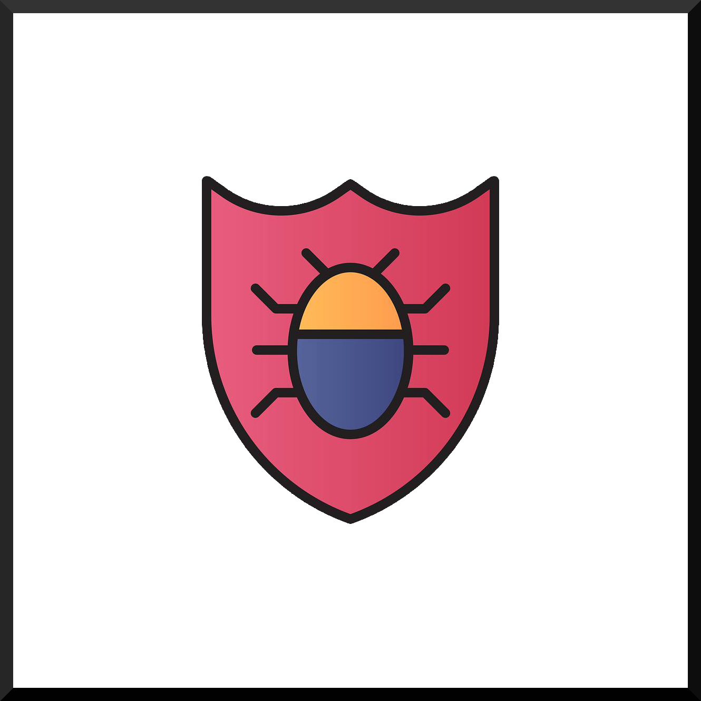
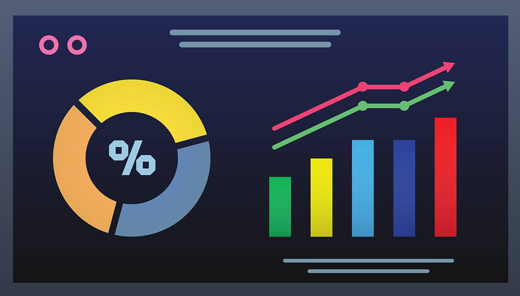
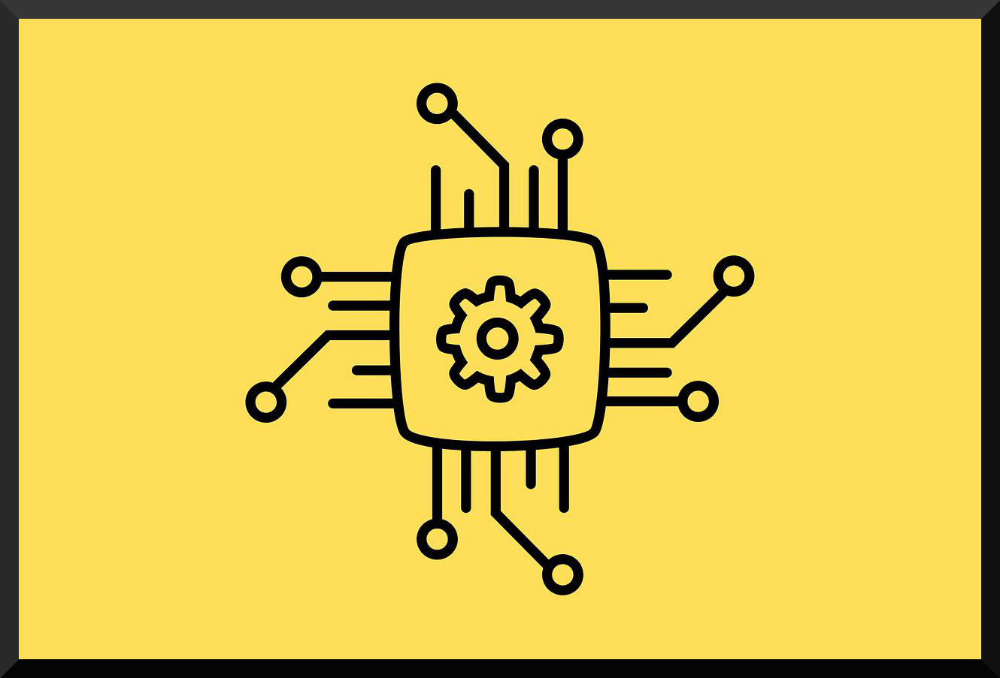
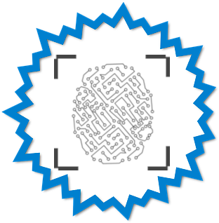

Learn about bugs
We plan ahead.

Learn about your data
Our services never "phone home."

Learn about our design
We believe more is less.

Learn about privacy
The new privacy is innovation.
Are you a member of the press interested in Cydog Browser?
Our branding kit is available as a download below. Guidelines for use: use the graphics as they are in their original aspect ratio. You must use our logo on either a black or white background, even though we have provided an image with a transparent background to make your day better. Feel free to contact us here.